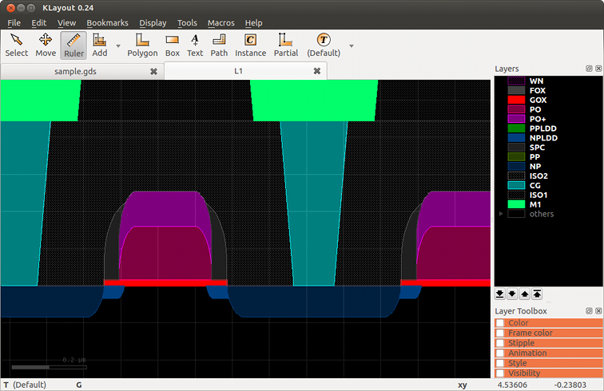

Welcome to klayout_pyxs’s documentation!
Contents
Welcome to klayout_pyxs’s documentation!#
klayout_pyxs is a package that implements a cross-section generator for the KLayout VLSI layout viewer and editor http://www.klayout.de.
It is a port of Ruby script XSection. Most of the algorithms / tests / documentation are taken with minor adaptations from XSection project.
In order to use the cross section generator, a description of the
process must be provided. Such a description is stored in files with
extension .pyxs. They contain a step-by-step recipe how the layer
stack is formed. Statements will describe individual process steps
such as etching, deposition and material conversion (i.e. implant).
The source tree contains one example for such a file in “samples/cmos.pyxs”. This example illustrates how to create a “.pyxs” and has a lot of documentation inside. Have a look at this file here: [cmos.pyxs](cmos.pyxs).
Using The KLayout PYXS Module#
Start KLayout after you have installed the script. You will find a new entry in the “Tools” menu.
Choosing “Tools/pyxs/Load pyxs script” opens a file browser and you are prompted for the .pyxs file.
To create a cross section, draw a ruler into the layout indicating the line along which the
cross section is created. Choose “Tools/pyxs/Load pyxs script” to select
the “.pyxs” file and to generate the cross section in a new layout window. Once you have
used a .pyxs file, it is available in the recently used files list below the “Tools/pyxs”
menu entry for quick access.
An introduction into writing PYXS files can be found here: Writing PYXS files - an Introduction.
A function reference is also available here: PYXS File Reference.
Example#
The following screenshot shows a sample cross section taken from the [cmos.pyxs](cmos.pyxs) sample file and the [sample.gds](sample.gds) layout found in the samples folder:
